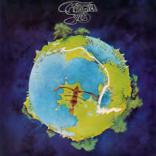

Graduation
Lançado em 11 de setembro de 2007, Graduation é o terceiro álbum de estúdio de Kanye West. Marcado pela inovação, o disco abandonou o soul com samples de seus trabalhos anteriores em prol de sintetizadores grandiosos, batidas eletrônicas e influências de pop rock e indie rock, consolidando o rapper como um ícone cultural global.

Damn.
O álbum DAMN. (2017) de Kendrick Lamar é uma obra-prima que explora a dualidade humana, a fé, o pecado e as consequências de nossas escolhas. Consagrado como o primeiro álbum de rap a vencer o Prêmio Pulitzer, o disco transita entre a agressividade e a introspecção com uma narrativa profunda.

Currents
Lançado em julho de 2015, Currents é o aclamado terceiro álbum de estúdio do projeto australiano Tame Impala. Escrito, gravado e produzido inteiramente por Kevin Parker, o disco marca uma transição sonora marcante do rock psicodélico para uma mistura envolvente de synth-pop, dance music e R&B.
ICARUS
Lançado em 2019, ICARUS é o quarto álbum de estúdio de BK. O disco explora temas como a busca pela liberdade e a crítica social, com uma sonoridade que une elementos do rock e do pop.

Luz
Lançado em 2015, o álbum "Luz" de Djavan é uma homenagem à sua carreira e à sua influência na música brasileira. Com uma sonoridade que une elementos do samba, do reggae e do rock, o disco apresenta canções que refletem a essência da cultura brasileira.
Don't Forget About Me, Demos
O álbum "Don't Forget About Me, Demos" de Dominic Fike é uma coletânea que apresenta versões acústicas e raras de canções do artista. Lançado em 2020, o disco oferece uma visão mais íntima e vulnerável do músico, destacando sua habilidade para criar melodias envolventes e letras profundas.

A Night At The Opera
Lançado em 1975, "A Night At The Opera" é o quarto álbum de estúdio da banda britânica Queen. O disco é conhecido por suas composições épicas e experimentais, incluindo a famosa faixa "Bohemian Rhapsody".

Chile WordWide
O álbum "Chile WordWide" de Chile WordWide é uma obra-prima que explora a dualidade humana, a fé, o pecado e as consequências de nossas escolhas. Consagrado como o primeiro álbum de rap a vencer o Prêmio Pulitzer, o disco transita entre a agressividade e a introspecção com uma narrativa profunda.

Faz Parte da Subida
O álbum "Faz Parte da Subida" de Bradockdan é uma coleção de faixas que refletem a jornada do artista, explorando temas de crescimento, superação e autenticidade. Lançado em 2021, o disco apresenta um som que une elementos do hip-hop, drill agressivo e do R&B.

Fragile
Lançado em 1971, "Fragile" é o quarto álbum de estúdio da banda britânica Yes. O disco é conhecido por suas composições complexas e virtuosismo musical, incluindo a famosa faixa "Roundabout".